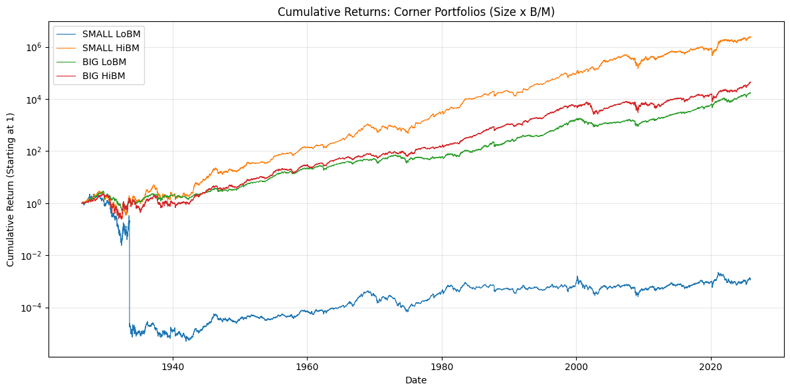
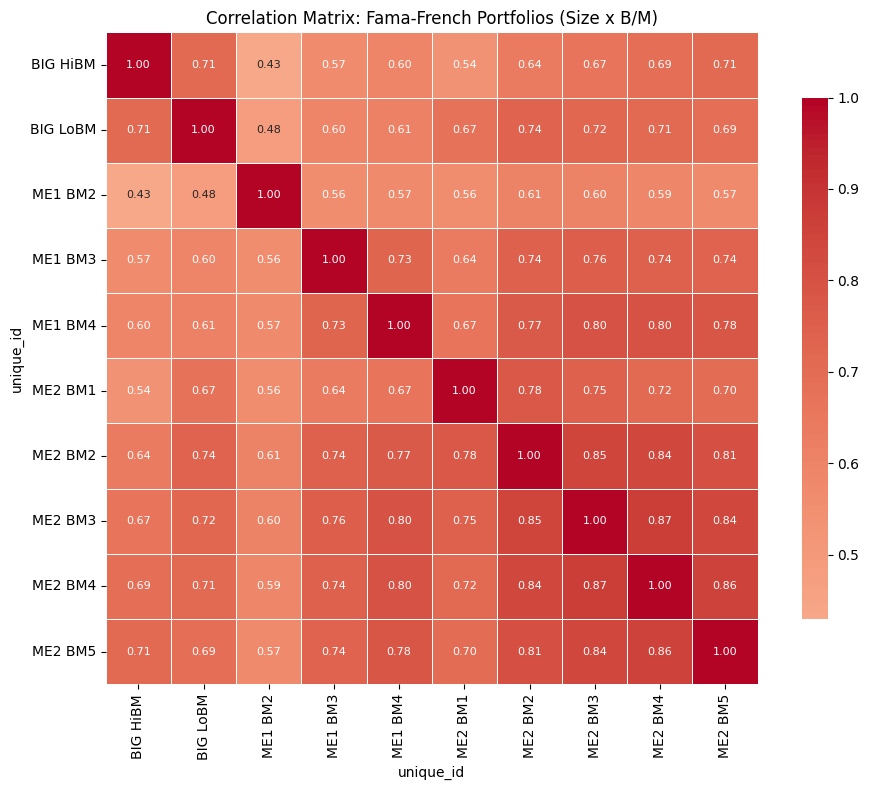
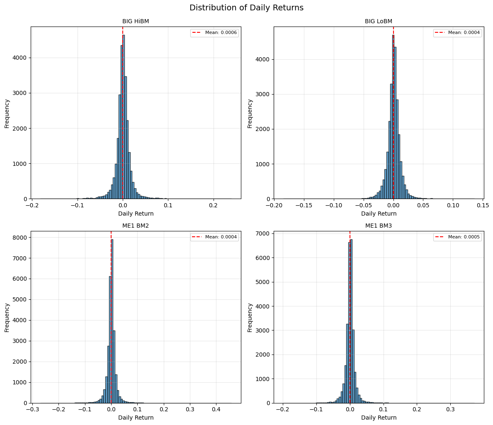

Ken French Data Library - Fama-French 25 Portfolios#
This notebook provides summary statistics and visualizations for the Fama-French 25 portfolios sorted by Size and various characteristics (Book-to-Market, Operating Profitability, Investment).
Data Source#
Data is publicly available from Ken French’s Data Library.
Reference#
Fama, Eugene F., and Kenneth R. French. “The cross-section of expected stock returns.” The Journal of Finance 47.2 (1992): 427-465.
# Import necessary libraries
import pandas as pd
import matplotlib.pyplot as plt
import seaborn as sns
import warnings
import chartbook
BASE_DIR = chartbook.env.get_project_root()
DATA_DIR = BASE_DIR / "_data"
warnings.filterwarnings("ignore")
Load the Datasets#
We have three daily portfolio datasets:
Size x Book-to-Market: 25 portfolios sorted by size and B/M ratio
Size x Operating Profitability: 25 portfolios sorted by size and OP
Size x Investment: 25 portfolios sorted by size and investment
# Load Size x Book-to-Market portfolios
size_bm_df = pd.read_parquet(DATA_DIR / "ftsfr_french_portfolios_25_daily_size_and_bm.parquet")
print(f"Size x Book-to-Market shape: {size_bm_df.shape}")
size_bm_df.head()
Size x Book-to-Market shape: (653225, 3)
| unique_id | ds | y | |
|---|---|---|---|
| 0 | SMALL LoBM | 1926-07-01 | -0.0046 |
| 1 | SMALL LoBM | 1926-07-02 | 0.0057 |
| 2 | SMALL LoBM | 1926-07-06 | 0.0038 |
| 3 | SMALL LoBM | 1926-07-07 | -0.0081 |
| 4 | SMALL LoBM | 1926-07-08 | 0.0056 |
# Load Size x Operating Profitability portfolios
size_op_df = pd.read_parquet(DATA_DIR / "ftsfr_french_portfolios_25_daily_size_and_op.parquet")
print(f"Size x Operating Profitability shape: {size_op_df.shape}")
size_op_df.head()
Size x Operating Profitability shape: (392725, 3)
| unique_id | ds | y | |
|---|---|---|---|
| 0 | SMALL LoOP | 1963-07-01 | -0.0070 |
| 1 | SMALL LoOP | 1963-07-02 | 0.0033 |
| 2 | SMALL LoOP | 1963-07-03 | 0.0067 |
| 3 | SMALL LoOP | 1963-07-05 | 0.0052 |
| 4 | SMALL LoOP | 1963-07-08 | -0.0031 |
# Load Size x Investment portfolios
size_inv_df = pd.read_parquet(DATA_DIR / "ftsfr_french_portfolios_25_daily_size_and_inv.parquet")
print(f"Size x Investment shape: {size_inv_df.shape}")
size_inv_df.head()
Size x Investment shape: (392725, 3)
| unique_id | ds | y | |
|---|---|---|---|
| 0 | SMALL LoINV | 1963-07-01 | -0.0067 |
| 1 | SMALL LoINV | 1963-07-02 | 0.0039 |
| 2 | SMALL LoINV | 1963-07-03 | 0.0034 |
| 3 | SMALL LoINV | 1963-07-05 | 0.0072 |
| 4 | SMALL LoINV | 1963-07-08 | -0.0021 |
Summary Statistics - Size x Book-to-Market Portfolios#
# Pivot to wide format
size_bm_wide = size_bm_df.pivot(index='ds', columns='unique_id', values='y')
# Calculate summary statistics (annualized)
summary_stats = size_bm_wide.describe().T
summary_stats['annualized_mean'] = summary_stats['mean'] * 252
summary_stats['annualized_std'] = summary_stats['std'] * (252 ** 0.5)
summary_stats['sharpe'] = summary_stats['annualized_mean'] / summary_stats['annualized_std']
summary_stats[['count', 'annualized_mean', 'annualized_std', 'sharpe', 'min', 'max']]
| count | annualized_mean | annualized_std | sharpe | min | max | |
|---|---|---|---|---|---|---|
| unique_id | ||||||
| BIG HiBM | 26129.0 | 0.142705 | 0.280692 | 0.508405 | -0.1815 | 0.2397 |
| BIG LoBM | 26129.0 | 0.110707 | 0.182019 | 0.608216 | -0.1845 | 0.1359 |
| ME1 BM2 | 26129.0 | 0.107540 | 0.309830 | 0.347092 | -0.2693 | 0.4579 |
| ME1 BM3 | 26129.0 | 0.130829 | 0.238188 | 0.549267 | -0.1980 | 0.3711 |
| ME1 BM4 | 26129.0 | 0.147271 | 0.214402 | 0.686890 | -0.1459 | 0.2451 |
| ME2 BM1 | 26129.0 | 0.098051 | 0.238048 | 0.411897 | -0.1546 | 0.2821 |
| ME2 BM2 | 26129.0 | 0.128415 | 0.202870 | 0.632992 | -0.1344 | 0.3101 |
| ME2 BM3 | 26129.0 | 0.133210 | 0.196182 | 0.679012 | -0.1471 | 0.1903 |
| ME2 BM4 | 26129.0 | 0.139985 | 0.200609 | 0.697803 | -0.1544 | 0.2991 |
| ME2 BM5 | 26129.0 | 0.160784 | 0.235297 | 0.683323 | -0.1571 | 0.2701 |
| ME3 BM1 | 26129.0 | 0.105086 | 0.207775 | 0.505768 | -0.1450 | 0.1375 |
| ME3 BM2 | 26129.0 | 0.127627 | 0.185098 | 0.689509 | -0.1404 | 0.1564 |
| ME3 BM3 | 26129.0 | 0.129920 | 0.185752 | 0.699430 | -0.1942 | 0.2342 |
| ME3 BM4 | 26129.0 | 0.138533 | 0.193861 | 0.714601 | -0.1521 | 0.2339 |
| ME3 BM5 | 26129.0 | 0.149492 | 0.243500 | 0.613931 | -0.1912 | 0.3012 |
| ME4 BM1 | 26129.0 | 0.110808 | 0.190592 | 0.581389 | -0.1911 | 0.1407 |
| ME4 BM2 | 26129.0 | 0.115248 | 0.177618 | 0.648855 | -0.1627 | 0.2277 |
| ME4 BM3 | 26129.0 | 0.122239 | 0.183263 | 0.667012 | -0.1573 | 0.2560 |
| ME4 BM4 | 26129.0 | 0.136414 | 0.200849 | 0.679188 | -0.1384 | 0.2143 |
| ME4 BM5 | 26129.0 | 0.142776 | 0.260568 | 0.547941 | -0.1755 | 0.3364 |
| ME5 BM2 | 26129.0 | 0.105196 | 0.173130 | 0.607614 | -0.2054 | 0.1678 |
| ME5 BM3 | 26129.0 | 0.111699 | 0.182631 | 0.611613 | -0.1894 | 0.2078 |
| ME5 BM4 | 26129.0 | 0.106993 | 0.214659 | 0.498431 | -0.2042 | 0.2364 |
| SMALL HiBM | 26129.0 | 0.164619 | 0.212903 | 0.773214 | -0.1868 | 0.2889 |
| SMALL LoBM | 26129.0 | 0.118255 | 0.481118 | 0.245791 | -0.9999 | 1.2794 |
Data Coverage#
Let’s examine the date range and data availability.
# Data coverage
print("Size x Book-to-Market Portfolios:")
print(f" Date range: {size_bm_wide.index.min()} to {size_bm_wide.index.max()}")
print(f" Number of trading days: {len(size_bm_wide)}")
print(f" Number of portfolios: {len(size_bm_wide.columns)}")
Size x Book-to-Market Portfolios:
Date range: 1926-07-01 00:00:00 to 2025-11-28 00:00:00
Number of trading days: 26129
Number of portfolios: 25
Cumulative Returns - Size x Book-to-Market Portfolios#
Let’s visualize the cumulative returns for a selection of portfolios.
# Select corner portfolios for visualization
corner_portfolios = ['SMALL LoBM', 'SMALL HiBM', 'BIG LoBM', 'BIG HiBM']
available_corners = [p for p in corner_portfolios if p in size_bm_wide.columns]
if available_corners:
fig, ax = plt.subplots(figsize=(12, 6))
for portfolio in available_corners:
cumret = (1 + size_bm_wide[portfolio]).cumprod()
ax.plot(cumret.index, cumret.values, label=portfolio, linewidth=0.8)
ax.set_title('Cumulative Returns: Corner Portfolios (Size x B/M)', fontsize=12)
ax.set_xlabel('Date')
ax.set_ylabel('Cumulative Return (Starting at 1)')
ax.legend(loc='upper left')
ax.grid(True, alpha=0.3)
ax.set_yscale('log')
plt.tight_layout()
plt.show()
else:
print("Corner portfolios not found. Available portfolios:", size_bm_wide.columns.tolist()[:5])

Correlation Matrix - Size x Book-to-Market Portfolios#
Showing correlation between a subset of portfolios.
# Calculate correlation matrix for subset
n_portfolios = min(10, len(size_bm_wide.columns))
subset_cols = size_bm_wide.columns[:n_portfolios]
corr_matrix = size_bm_wide[subset_cols].corr()
# Create heatmap
plt.figure(figsize=(10, 8))
sns.heatmap(
corr_matrix,
annot=True,
fmt=".2f",
cmap="coolwarm",
center=0,
square=True,
linewidths=0.5,
cbar_kws={"shrink": 0.8},
annot_kws={"size": 8}
)
plt.title('Correlation Matrix: Fama-French Portfolios (Size x B/M)', fontsize=12)
plt.tight_layout()
plt.show()

Distribution of Daily Returns#
# Histogram of daily returns for a few portfolios
fig, axes = plt.subplots(2, 2, figsize=(12, 10))
axes = axes.flatten()
portfolios_to_plot = size_bm_wide.columns[:4].tolist()
for i, portfolio in enumerate(portfolios_to_plot):
ax = axes[i]
size_bm_wide[portfolio].hist(ax=ax, bins=100, edgecolor='black', alpha=0.7)
mean_ret = size_bm_wide[portfolio].mean()
ax.axvline(mean_ret, color='red', linestyle='--', label=f'Mean: {mean_ret:.4f}')
ax.set_title(f'{portfolio}', fontsize=10)
ax.set_xlabel('Daily Return')
ax.set_ylabel('Frequency')
ax.legend(fontsize=8)
ax.grid(True, alpha=0.3)
plt.tight_layout()
plt.suptitle('Distribution of Daily Returns', y=1.02, fontsize=14)
plt.show()

Summary#
This dataset provides daily returns for the Fama-French 25 portfolios formed on various characteristics. These portfolios are widely used as test assets in empirical asset pricing research to evaluate factor models and understand the cross-section of expected returns.
The portfolios exhibit significant variation in average returns across size and value dimensions, consistent with the well-documented size and value premiums in equity markets.